NPRG086: Functions, trees, processes
Functions and functional programming
Tomáš Petříček, 204 (2nd floor)
petricek@d3s.mff.cuni.cz
@tomasp.net
https://tomasp.net

From Lisp
Functional language?
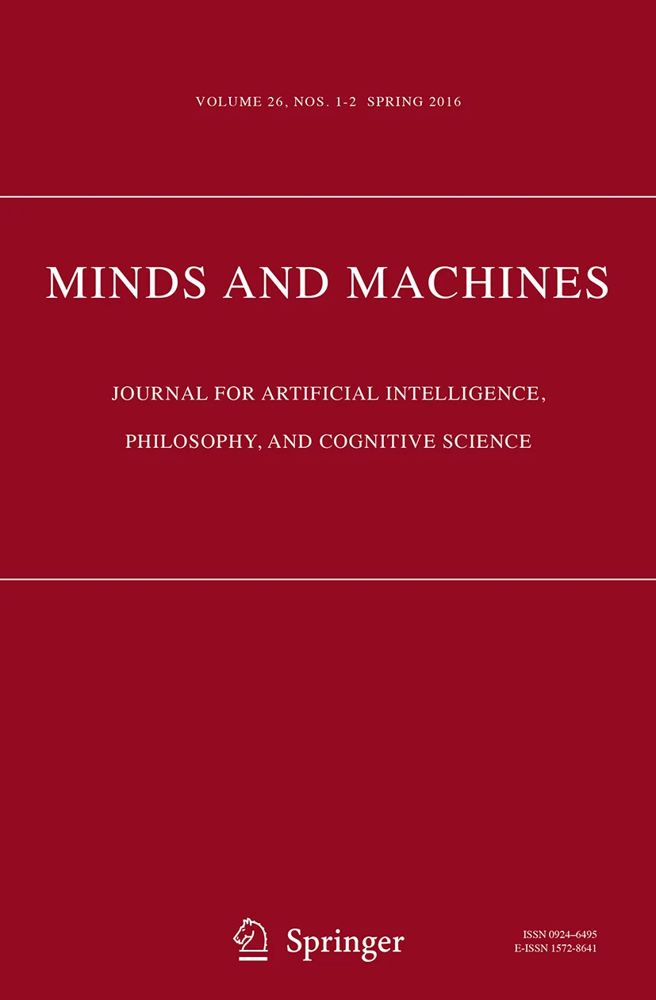
Origins
Mark Priestley on Lisp
LISP was not based on the lambda calculus, despite using the word "LAMBDA" to denote functions. ... McCarthy was aware of (Church 1941) but had not studied it.
Real origins of Lisp
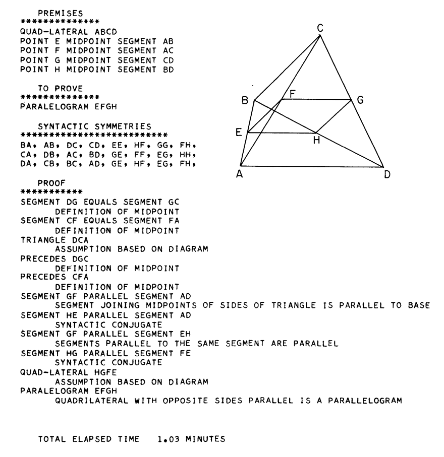
Geometry theory machine
- Theorems in plane geometry
- Own research on AI topics
FLPL (1958)
- FORTRAN-compiled List-Processing Language
- Using 36-bit words for linked lists
- No recursion and other limitations
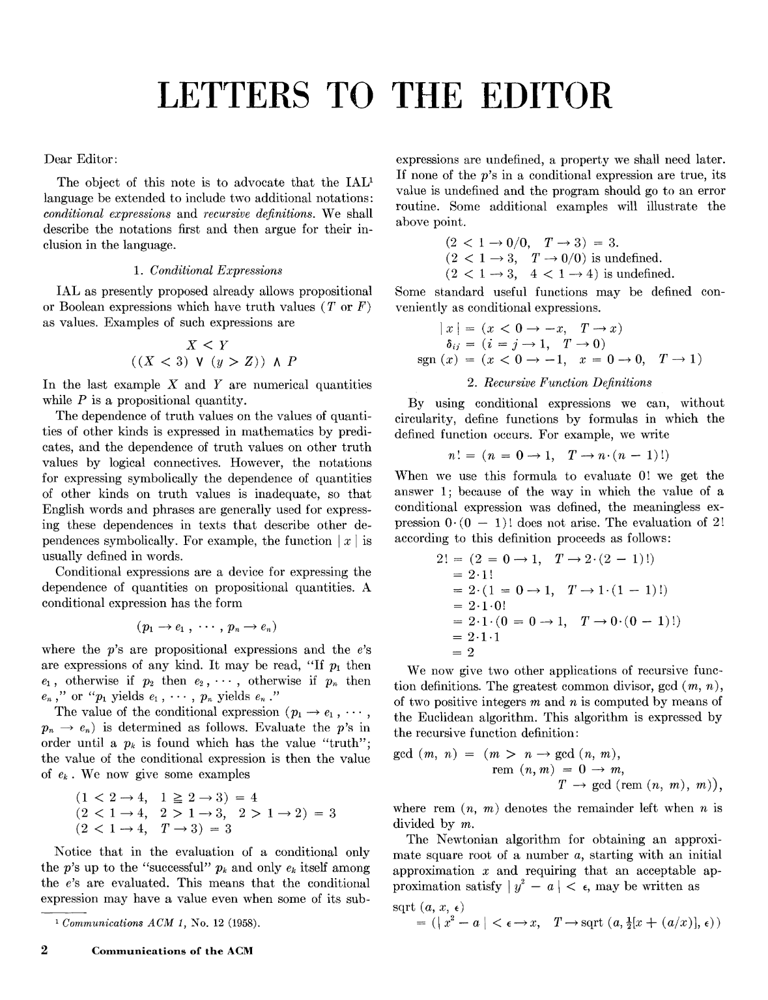
Dear Editor:
Two proposed additions
to IAL (later Algol)
1. Conditional expression
2. Recursive functions
The first was added, the second not forbidden
LISP I - Manual (1960)
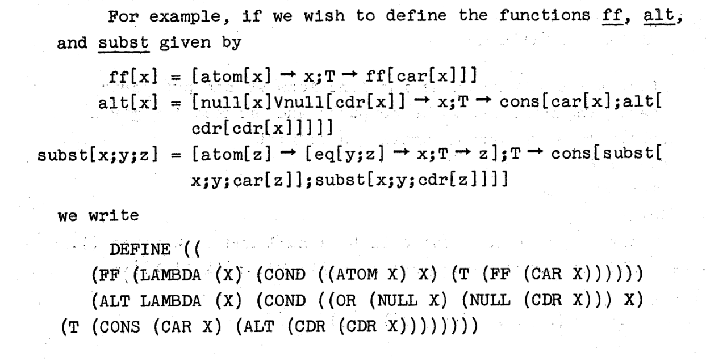
Two notations
- "Normal" M-expressions
- List-based S-expressions
LAMBDAin the latter
Language features
- Lists based on FLPL
- First-class recursion support
- Imperative programming with
goto - Higher-order functions like
maplist
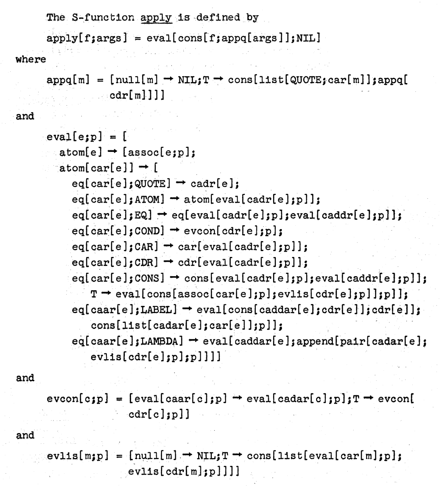
Theoretical links
Theory of recursive functions
Refernece to partial recursive functions
Universal function
eval function - first theoretical idea, later implemented
(No reference to ADES)
Lisp
How functions and variables worked
- Reduction in lambda-calculus \((\lambda x.e_1) e_2 \rightarrow_\beta e_1[x/e_2]\)
- Not practical for actual implementation!
- Variables stored in association list (a-list)
- Most recent variable from a-list used
- Dynamic scoping - not as in lambda calculus!
The Function of FUNCTION in LISP: Why the FUNARG problem Should be Called the Environment Problem
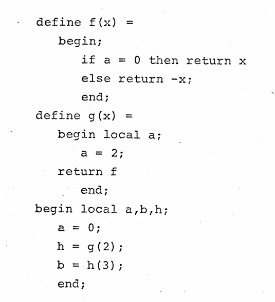
aassigned2insideg- function
fis then returned aassigned0before calling it
Not obvious!
- Weizenbaum (1968), The FUNARG Problem Explained
- Moses (1970), The Function of FUNCTION in LISP Why the FUNARG problem...
- Sandewall (1971), A proposed solution to the FUNARG problem
- Steele & Sussman (1975), The Lambda papers
Faulty function (LISP I)
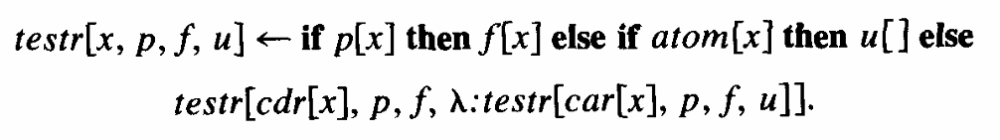
I must confess that I regarded this difficulty as just a bug and expressed confidence that Steve Russell would soon fix it. He did fix it, but by inventing the so-called FUNARG device that took the lexical environment along with the functional argument.
(McCarthy, 1978)
Aside: Semantics of Algol
The mechanical evaluation of expressions (1964)
We represent the value of a \(\lambda\)-expression by a bundle of information called a "closure," comprising the \(\lambda\)-expression and the environment relative to which it was evaluated.
Language semantics motivation
- Landin's model of Algol using lambda calculus
- Recall Mervyn Pragnell's reading group!
- "similar to FUNARG" and in contrast to "literal substitution"
Language semantics
How to model goto and returns?
-
van Wijngaarden (1964): "Provide each procedure declaration with an extra formal parameter... and insert at the end [goto] leading to that formal parameter."
-
Many names for the concept: Landin (1964) SECD "dump", Mazurkiewicz (1969) "tail function", Morris (1970) "label values", Abdali (1973) "program remainder"
-
Wadsworth (1970) "Once I'd coined the word [continuation] it all clicked and the rest followed."
Continuations
Shifting motivations
-
Programming language semantics
Wijngaarden, Landin, Morris, Wadsworth -
Proving program properties
Mazurkiewicz, Strachey -
Managing environments efficiently
Fischer, Steele and Sussman
Scheme: The Lambda papers
-
Scheme: An Interpreter for Extended LC (1975)
Lexically scoped Lisp with closures, explaining actors -
Lambda: The Ultimate Imperative (1976)
GOTO, assignment and loops modelled with CPS -
Lambda: The Ultimate Declarative (1976)
Lambda as naming; does not need to return! -
Debunking the "Expensive Procedure Call" Myth (1977)
Using tail calls to compile calls effectively
Lessons from the Lisp history
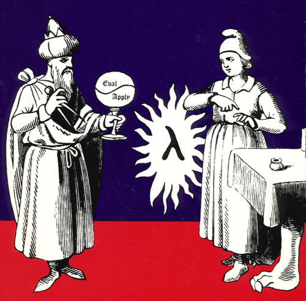
Functions in Lisp
- Funarg problem fixed via workarounds
- "Monster" function to be "fixed"
- 15 years from Lisp to Scheme!
- Not a practical engineering problem?
Influences across levels
- AI motivations, weak lambda calculus link
- Continuations move from semantics to implementation
- Theoretical influence leads to (successful) Scheme
Towards Haskell
Functional programming!
Peter Landin
Actual lambda calculus influence
From Roger Penrose via Mervy Pragnell's reading group
Lambda calculus for semantics and design
- The mechanical evaluation of expressions (1964)
- A correspondence between ALGOL 60 and LC (1965)
- A Generalization of Jumps and Labels (1965)
- The next 700 programming languages (1966)
Peter Landin
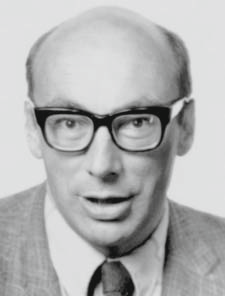
Papers on semantics
- SECD (stack, env, control, dump)
- Language constructs translate to LC
- Closure = function + environment
ISWIM and 700 PLs
- Design range of LC-based languages
- Prefers denotative over functional or declarative
- Function definitions in a modern functional sense
Early functional-style languages
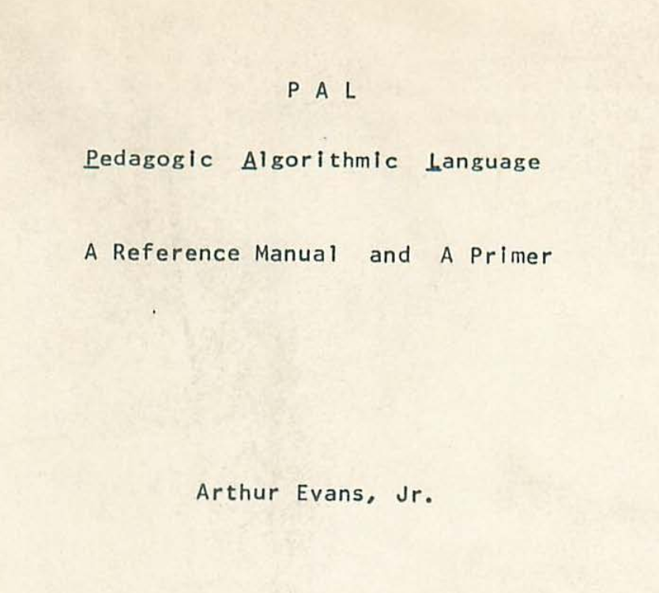
PAL (MIT, 1967)
- ISWIM implementation in BCPL
- Small applicative subset (lambdas, functions, tuples, conditional, let)
- Imperative (assignment, goto)
COWSEL/POP-1 (1966)
- Partial function application (misnomer)
- Dynamic scoping (for memory/engineering reasons)
- Frozen formals
(% ... %)akin toFUNARG
POP-2 (Edinburgh, 1970)
- Algol-inspired with "functions first-class"
- Burstall addressing Strachey's complaint about Algol
Theoretical work
Typed lambda calculus
- Scott (1970s) - Type-theoretical alternative to ISWIM
- Typed LC model with denotational semantics
- Functions are partial (bottom element)
- Made unnecessary by model of untyped LC
- Morris, Reynolds (1970s) - Theory of type structure
LCF/ML (Milner, late 1970s)
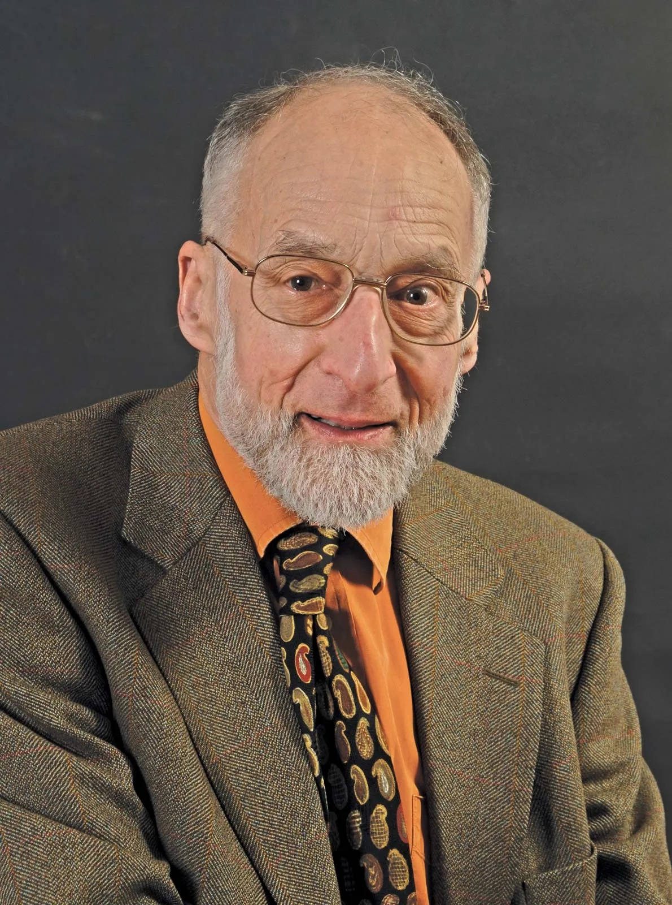
LCF theorem prover
- Aims to prove compiler correctness
- Scott's Logic for Computable Function
-
Interactive Stanford LCF theorem prover
(made possible by time-sharing?) - Edinburgh LCF adds meta-language
Meta-language
- Write code to construct theorems in LCF
- Types used to ensure correctness
- Becomes a programming language (HOPE, VAX ML, SML)
Formal verification
From PL/CV to NuPrl
- PL/1 language with support for correctness proofs
- Difficulties getting "functions right" (first-class)
- ALGOL 68 does not; \(\lambda\)-calculus "not respectable"
- Martin-Löf's theory to clarify "intuitionistic mathematics"
- Adopted by Constable for Nuprl (PL/CV follow-up)
Functional programming
Can Programming Be Liberated from the von Neumann Style? A Functional Style and Its Algebra of Programs
Backus, Turing Award lecutre (1978)
Just as structured programming eschews many control statements to obtain programs with simpler structure, better properties, and uniform methods for understanding their behavior, so functional programming eschews the lambda expression, substitution, and multiple function types.
Functional programming terminology, but talks about algebra of programs and formal reasoning
Backus lecture
Unexpected effects
- Agreement on von Neumann bottleneck
- Adoption of the term functional programming
- Most kept lambda functions and variables
- Presents past work from LC perspective
Caveats
Dijkstra's criticism of the talk
In short, the article is a progress report on a valid research effort but suffers badly from aggressive overselling of its significance, long before convincing results have been reached. This is the more regrettable as it has been published by way of Turing Award Lecture.
Well-founded critique
- Algebra of programs exists, but more academic
- Later work on FP tries to develop optimizations...
Functional programming
SASL (Turner, 1978), KRC (Turner, 1982)
Lazy, purely functional programming languages
Miranda (Turner, 1985)
Purely functional, non-strict language with
Hindley–Milner polymorphism in one system
Haskell (1990)
Program is a function, mostly follows Miranda,
Type classes as a main additional novelty
Conclusions
Functional programming
Many ideas struggle
Possibly before firm link across formal,
implementation and intuitive levels?
- First-class functions (ALGOL, PL/CV, LISP)
- Links to recursion & lambda calculus (ADES, LISP)
- Variable binding (von Neumann) and scoping (LISP)
- Continuations (from semantics to implementation)
Interactions across levels
Between theory and practice
- Translation to a small formal model
- ISWIM as theory, Scheme as implementation
- Not obvious well-documented link
From theory to intuition
- Backus' FP system and von Neuman bottleneck
- Main effect on thinking about functional programming!
Monsters
-
Pseudo-functions with effects (print) in LISP 1.5
Eliminated in pure functional languages -
Laziness in LC, but not mathematical functions
Simplifies calling conventions of Algol -
Funarg problem seen as something to be fixed
Fixes eventually replaced by different approach